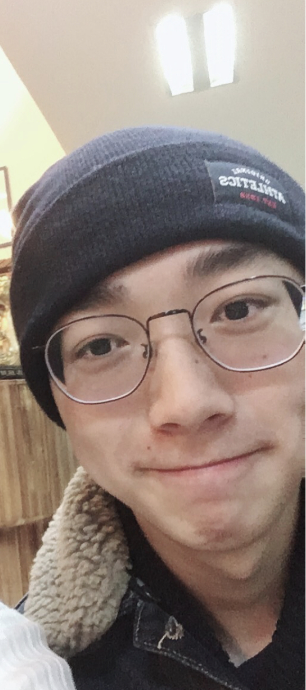

Personal information
My name is Weijun Sun, the student ID is s3711782, my email address is s3711782@student.rmit.edu.au. I come from the south of China mainland, so I mother language is Chinese. My second language is English. I do not have many hobbies, but one of mt prefer hobby is video games.
Interest in IT
In recent years, one of the hottest topics of IT definitely is AI. After I tried those innovative inventions, I was attracted by AI deeply. I believe this technology will greatly change our lifestyle in a short period. Also, AI is a double-sword technology invention. We do not know which direction it will be developed. For example, 4G, because of it, we can watch 1080P video in our mobile phone, we can use 4G to watch or post live broadcast, we also can use 4G to play games like PUBG. However, some people might use 4G to spy other people or addiction to the games. AI is the same, it not only can bring many conveniences for us, but also can bring negative effect to us. For example, become a lazy person. Because of these things, I want to learn more about AI. I want to create AI which can improve our life and bring positive changes. 13, 04, 2017, Stephen Hawking warned the scientific community that AI might become the biggest disaster in human history. He thinks that although AI can bring huge benefits. However, it also can pose dangers. For example, the powerful autonomous weapons owned by the terrorist. Or help a few people who own this powerful invention to oppress other people. Or AI has their own mind and against human being’s wishes. This event is the fuse that makes me decide to learn this major. In 2018, I learned language C in RMIT Foundation Studies. This is the beginning of my programming life. I choose RMIT because in 2017 summer vacation, I came to Melbourne as a visitor, my aunty introduces the RMIT to me. When I first time saw the building 80, I was shocked by this building, at first, I even do not recognize that this is a university. The buildings are so fancy, it also located in the city. After this travel, I find a lot of interesting things about RMIT on the internet. The most important thing is the facilities are advance and the comment of past RMIT student is pretty good. So I selected this university to learn IT. About what I want to learn during the studies. First of all, I want to learn the basic programming knowledge, understand what computer and the principle are how can hardware understanding codes. After I learn this foundation knowledge, I want to choose the direction of AI that can make me deeply understand this advance technology. Finally, also the most importantly is learning how to learn independently, how to self-study.
Ideal Job
I want a job that can let me programming for the robot. I choose this area of job because use the code to make a machine like a creature is quite interesting, which means I can have a great working environment to do my project. Moreover, In China, AI definitely is the biggest trend in the IT industry and for the next few years, which means the job will easier to find than other jobs in the IT industry. Naturally, the salary for it should be a nice and big amount. Job AD: Link: https://rmit.instructure.com/courses/52956/assignments/354575
Snapshot:
Description:
The name of this job position is machine learning engineer. I believe that the working environment might suit for me because I might can get a positive work and the salary of it is great. Also, I prefer to enjoy my work rather than hate it. I do not want work becomes to work. I think this job can makes me happy when I do the work. I not only can use my IT knowledge and learning new knowledge in this area, but also can help patients to get higher quality service. It is makes me proud because I can use my knowledge to help other people. It requires the job applicant have at least bachelor degree and:
For now, I only have the basic C language skill and English communication skill. I still need to improve my communication ability because English is my second language. Also, in order to meet the requirement of this job. I need to learn deeper about C language and begin to study a new language: Python. There are many online programming guide applications I can use. RMIT also helped us to subscribe a great programming self-study website which is Grok Milestone. After these steps, I will start to find which elective courses can I select to learn AI and view each course what kind of knowledge I will learn. Because when I finish this step, I can find the relevant information to preview. When I done those plans, I should already have the fundamental IT knowledge. So I need to start to find internship to gain the working experience.
Personal profile
For the first test which is Myers-Briggs, the result shows that I am ISFP-T (the definition of it is adventurer). Through the result, I conclude that I am a mental introversion person because most of the time I prefer to stay along, enjoy the silence. That also can make me feel comfortable because I am really fear of socializing. But on the other hand, I also am a turbulent person, which means when I want to do something, I will do it first by myself without a proper plan. Because of that, I always make things messy. Naturally, I do not like being controlled by someone in the workspace. Also, I like to break the normal method and use the unnormal ways to solve the problem. For the second test which is a learning style test, the result shows that my preferred learning style is auditory. When the information shown as the oral format, I will learn quickly and efficiently. However, I am not good at communication with others such as discussion in a class. But I am a good listener when people have issues that want to talk with someone to release their negative mood. I would rather hear something than watch or read something. For the third test which is a creativity test. The result is not beautiful because the mark is 41.71 out of 100. My curiosity score is higher than the other types. This means in some specific occasion that I prefer to change the thing that I cannot agree but it accepted by most of the people’s mind. The second-high score is boldness. In some case, I can break the rule of normal things and jump out of the normal structure. But that’s not always happened in my life. The lowest score is persistence. Because of my personality, when I meet the problem that I cannot easy to fix, most of my decision is to give up. This is the biggest drawback that I need to fix. Compare with other testers in this area, my score still far away with them, most testers they can try the best to keep doing something even they face the hard issues. In conclusion, Most of the time in my life I am not a creative person, but sometimes normal things happen as a different direction that I cannot accept, I will break the normal rule and get some whimsical ideas in order to make change them as the way that as same as my expectation. Through these results, I can realize something that I never think about them. These results show what kind of people I am, they contain both advantages and disadvantages. I can use these results as a reference to guide me on how I can improve myself. Work means communication, collaboration. In order to work better in a team, I need to consider and respect the opinion of other teammates. I cannot be a person-centered people as a member of a team. Communicate with teammates before proceeding with the project also is an important skill that I need to use in the teamwork. In addition, because I am an auditory learner, I might need to get permission that allows me to use the recorder to record the audio version file. A quiet environment is important for me as well, because I will easy to get useless information to interpret the thing that I am doing. I should a character that listen to the command better than look the text files. So when working in a team, I need to improve my text reading skills.
Project ideas
I want to create an artificial intelligent robot that can be a communication robot. There are many social anxiety disorder (SAD) people like me in this world. They do not know how to get in touch with other people. Because of that, they afraid to socialize. Then I have the idea of this AI robot, it should help them to relieve symptoms in order to increase confidence and courage for themselves. In addition, this AI also can be a communication robot, taking with elders or children when their relative cannot stay with them. The main reason why I want to create this AI robot is that SAD patient is a big group. According to a research report, there are 8.4% SAD people in Australia. Yet few people experiencing social anxiety disorder seek treatment (Erica 2015). Many social phobia patients used to try to communicate with others and they found that other people always cannot properly understand want they want to express. After a period (it is depending on the individual), they become depressed. Because of that, they gradually isolate themselves. Some part of them might find the internet is good to communicate. However, they will be addicted to it. Because of that, I want to create an AI robot to solve this problem. This AI robot has 3 main functions and 3 secondary functions. For the first function, it will try to let the SAD patient talk with them. Patient thinks other people cannot understand their meaning. The function is designed to solve this issue. The robot will conclude the patient’s sentences, after that, it will output another expression method with the same meaning to talk with the patient. This can make the patient feel there still has someone can understand what they are thinking about. After this stage, patient might get confidence from communicating with the robot. Based on function one, stage two was designed to receive patient sentences, analyze these sentences and use human thinking method to give the reaction, which is preparing for normal communication scenario. At first, robot might not give proper feedback to the user. However, after using a period, robot will smarter than last time when user using it. Because robot is designed to analyze failure and learn from them. So when user using it, they always can get better feedback than previous answers. This not only just making improvements to the robot, but also for users. User can get information from robot’s feedback. For example (this scenario should build on patient already use this robot for a period), when user gets information that is unproperly feedback. They might get start to consider changing an express method to make robot to understand their real meaning. This also is a great method to practice their expression ability. When SAD patient talks with real people, they could change their way of expression to give a proper reply to other people. After this, patient should get enough communication skills, confidence and courage to talk with others. The last main function is giving advices in the future, which means that user meets some problem when talking with others, robot can give user advices to fix those problems, such as change the expression method, add some gesture when user talk with others or give some eye contact. This function can further improve user’s related skills. Then is the first secondary function, this function is designed for those elders’ children cannot accompany them for a long time (or the elders who do not have child). In this case, robot can be the character of nanny. Elders need special care, so robot should help them to do the housework, remind them to take medicine on time and make plan for a better life. Especially, Elders always feel lonely, so robot needs to talk with elders in order to let them keep mental health. Second is designed for children, especially for Chinese children. In China, many children’s parents need to work overtime, so a big part of parents will send their children to the babysitting program. However, the hosts service attitude usually not good. There still have some great services babysitting program in China main cities. The spend of this program will largely increase. In order to fix this situation, the robot can help those parents to take care of their children. The services should include live stream for the children and surroundings, keep refresh and report children’s current position for parents and give academic advice to the children. The core of this function still is communication because children always want to talk with knowledgeable people. The last function is general one. This function allows user to customize their preference. For example, the kind of personality, tone of speaking, etc. Nowadays many people give negative point of view about AI. Due to this, the function is designed to make the user feel easier to accept and use it. To create this AI robot, I will select Python because the syntax of it is clean, it also powerful. Furthermore, it is easier to use in machine learning compare with C++ and Java. The inference hardware for eight bits precision is widely accepted by now (Warden 2019), so I will use this hardware to start my project. For the open source tool, I will use Acumos AI. It is a platform and open source framework. It supports open source innovation the areas in AI, machine learning and deep learning. Also, it allows developers easier to build, share and distribute AI applications. In order to make this project to a real thing, I will need learning Python in the future study. Because Python is powerful, easy to learn and popular nowadays. After that, I can write the code about algorithm to make robot learning by themselves. However, the most important part is code of feedbacks, if robot meets bugs when they are servicing users, it should send feedback to the developer to fix it. In addition, I will need the skills of machine learning and hardware programming in order to make a robot rather than run a program in computers only. If the project successes in the future, it should alleviate the symptoms of the SAD patients. Patients should be able to have normal communication with others after using main function 3. They will have good and happy experiences when others can understand what they mean. The patients who addicted to internet now should be preferred face to face talking situation. For the group of elders, after they use this AI robot, they should be having better, colorful life experiences and a healthier body. For the group of children, they should have clearer ideas while they are studying. Also, children can keep good mood even parents cannot stay with them. For the parents, they should feel more assured when they are working that cannot go back to home and accompany their children.
Reference
Erica.C, Rachel.G, Andrew.B, Matthew.S, Maree.T and Tim.s, (2019). DSM-IV and DSM-5 social anxiety disorder in the Australian community [online] Available at: https://research-management.mq.edu.au/ws/portalfiles/portal/62326453/Publisher+version+%28open+access%29.pdf [Accessed 1 Aug. 2019].)
Warden, P. (2019). What Machine Learning needs from Hardware. [Blog] PETE WARDEN'S BLOG. Available at: https://petewarden.com/2019/04/14/what-machine-learning-needs-from-hardware/ [Accessed 6 Aug. 2019].